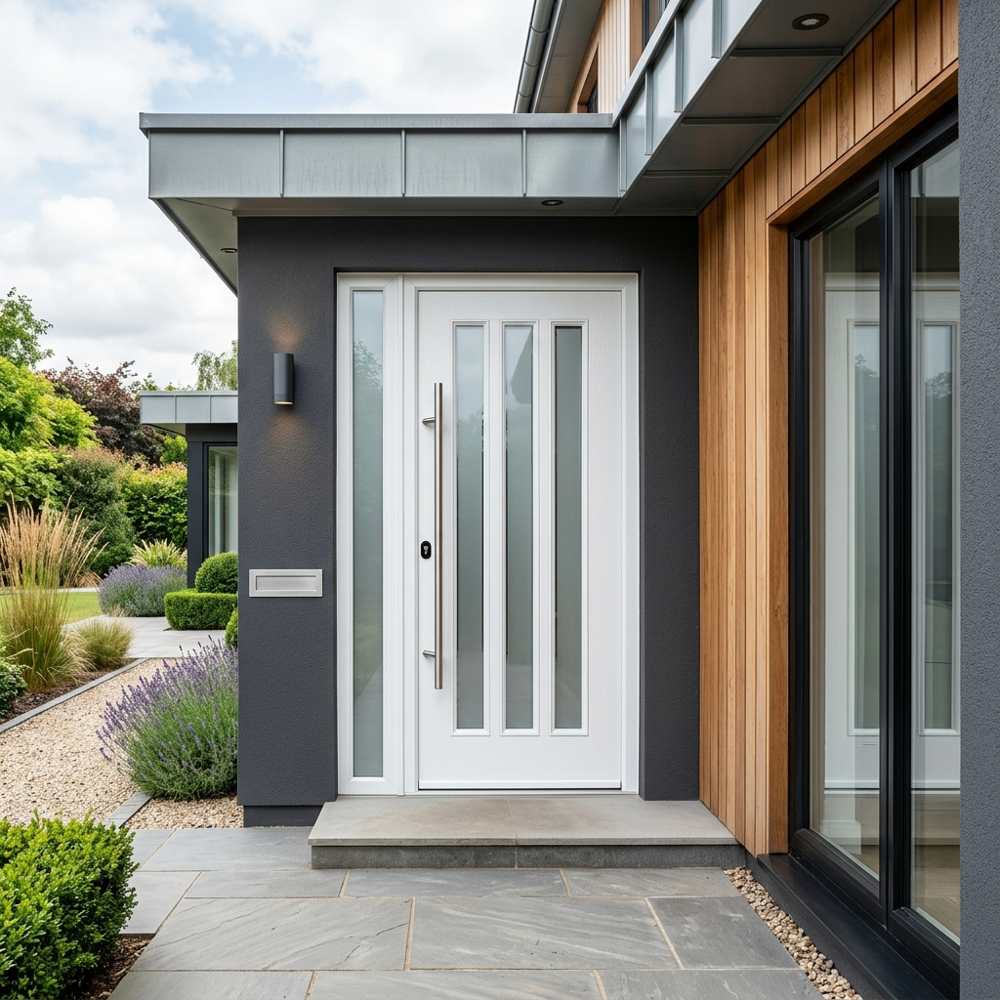

Biztonság és stílus az otthona kapujában
Fedezze fel modern műanyag bejárati ajtóinkat, melyek kiemelkedő hő- és hangszigeteléssel, valamint hosszú élettartammal rendelkeznek. A különböző panelvariációknak köszönhetően ajtaja nemcsak funkcionális, hanem lakása éke is lehet.
Termékeink nemcsak esztétikusak, hanem a legmagasabb biztonsági követelményeknek is megfelelnek. Az erősített profilrendszerek és a többpontos záródási mechanizmusok garantálják az Ön és családja nyugalmát, miközben az ajtók kiválóan ellenállnak az időjárás viszontagságainak.
Kiemelkedő energetikai mutatók, melyek hozzájárulnak otthona rezsiköltségének csökkentéséhez.
Zárja ki a külvilág zajait, és élvezze otthona csendjét a modern tömítési rendszerekkel.
Választható stílusos panelek széles választéka, hogy otthona bejárata igazán egyedi legyen.
Könnyen karbantartható felületek, melyek hosszú évtizedekig megőrzik eredeti fényüket.
Válasszon stílusos paneleink közül! Töltse le teljes S-Line katalógusunkat a részletekért:
S-Line Katalógus Letöltése (PDF)
Legyen szó klasszikus vagy modern stílusról, műanyag bejárati ajtóink minden igényt kielégítenek. A panelvariációk, üvegezési opciók és színek kombinálásával teljesen egyedi bejáratot alkothatunk.
Segítünk kiválasztani az otthonához legjobban illő bejárati ajtót.
Ajánlatkérés Küldése